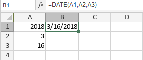

DATE funkcija
Funkcija DATE je jedna od funkcija za datum i vreme. Koristi se za dodavanje datuma u podrazumevanom formatu MM/dd/yyyy.
Sintaksa
DATE(year, month, day)
Funkcija DATE ima sledeće argumente:
| Argument | Opis |
|---|---|
| year | Numerička vrednost koja predstavlja godinu (četiri cifre). |
| month | Numerička vrednost koja predstavlja mesec (od 1 do 12). |
| day | Numerička vrednost koja predstavlja dan (od 1 do 31). |
Napomene
Kako primeniti funkciju DATE.
Primeri
Slika ispod prikazuje rezultat koji vraća funkcija DATE.
